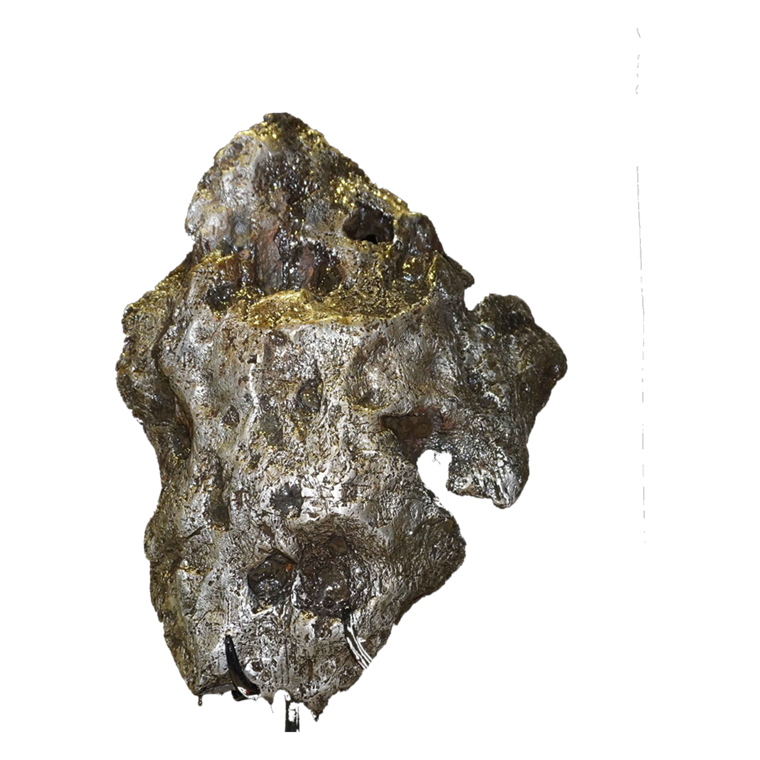
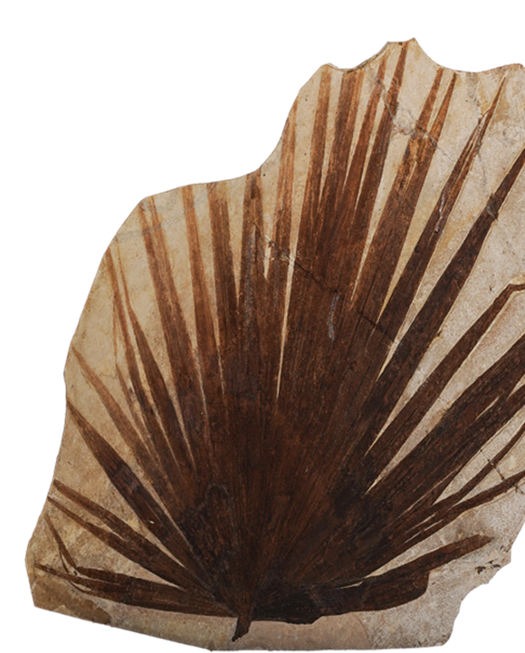
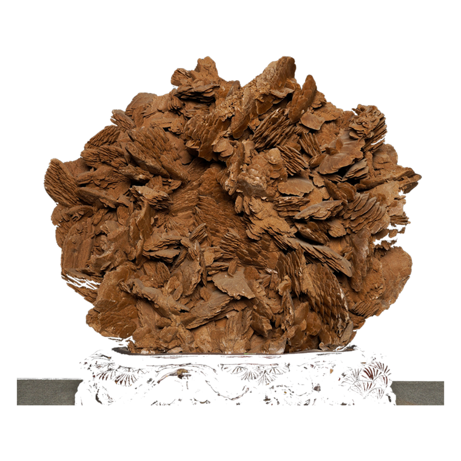
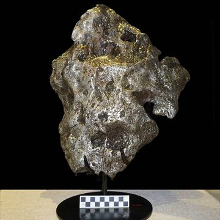
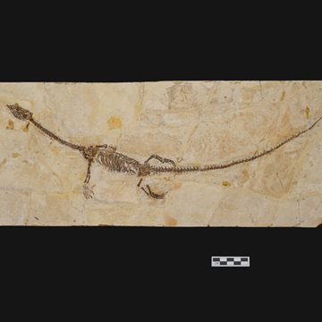
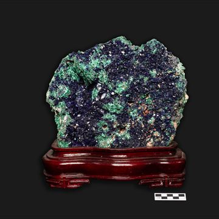
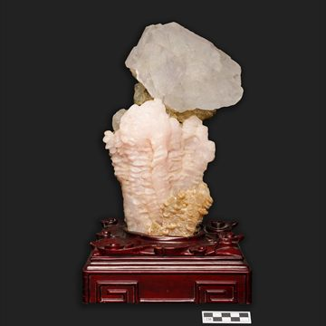
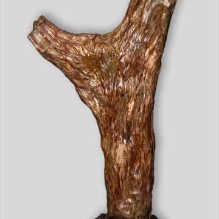
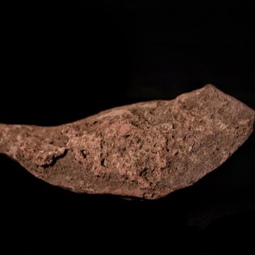

纹以载道
你见过它
瓦当上的圆、瓷器上的藤、铜鼎上的兽、织锦上的格——
它们反复出现在我们的生活里，
却很少有人能说出：它为什么长这样。
这条长卷只做一件事：把纹样重新拆开，让你看见它怎么被组织起来。
纹样不是装饰
先有骨架，再有母题，最后成纹。
看懂一个纹样，要看的不是它画了什么，
而是它如何被组织起来。
石头上，本来就长着纹样
桂林理工大学源于 1956 年的桂林地质学校。
地质是这所学校的出身——
而学校里那座地质博物馆，收藏着五万件会说话的石头。
我们把这套拆解纹样的方法，原样用在本校地质博物馆的藏品上。
结果发现：石头里天然长出来的纹样，和人工画的纹样，遵循同一套秩序。

馆藏 · 南丹铁陨石维斯台登纹
南丹铁陨石落地时被高温烧蚀，表面留下一个个拇指般的凹坑。把它切开、抛光、酸蚀，里面才露出真正的结构：三组互成 60° 的平行条带。

馆藏 · 棕榈叶化石掌状脉
一根叶柄撑起整片叶，主脉从基部呈扇形铺开，每一条都指向自己负责的那一小块阳光。分叉是为了均分，不是为了好看。

馆藏 · 沙漠玫瑰（石膏）玫瑰晶簇
石膏在沙里结晶，晶片一片压一片往外撑，最后撑成一朵花。它的每一瓣都从一个中心出发，越往外越宽。
五万件标本，一间屋子装不下
上面三件只是被我们拆开的三个样本。博物馆里还有更多：
鱼龙、陨石、矿物、化石，每一件都在用石头的方式讲秩序。






以上图片摄于桂林理工大学地质博物馆 · 馆藏标本 5 万余件
为什么这一节只能由桂工来做
桂林理工大学的地质博物馆是全国科普教育基地，馆藏包含鱼龙化石、南丹铁陨石，以及月球、火星与来自小行星的陨石； 学校搜集的南极陨石数量居全国高校首位，也是全国唯一开展南极陨石分类研究的高校。 这意味着我们手上有一批别人拿不到的实物——它们本身就是纹样的源头。 把「实物 → 线稿 → 矢量 → 动画」这条管线用在本校藏品上，作品才真正属于这所学校，而不只是一个通用模板。
四条线，一条时间轴
它们不是同时出现的。每一次改朝换代，纹样都换了一次语气——有的兴起，有的退场， 有的走了七千年还在用。
它们曾经长在这些器物上
纹样从来不是凭空画的。它依附于材料、工艺与用途——是先有器物，才有纹样。
它们今天活在哪里
传统不是被保存下来的，是被使用下来的。纹样进入当代设计，不是被「借用」，而是继续生长。
从一件实物，到一段动画
把博物馆里的器物，变成可以逐笔生长的矢量动画——这条管线分四步。
AI 承担了什么
母题素材生成（图像 / 视频 / 配音）、提示词与文案初稿、术语释义草稿、开发辅助。 页面内四个纹样的演示动画为人工编写的程序化矢量实现，不属于 AI 生成内容； 右侧「影像短片」为 AIGC 生成，已单独标注。
人工承担了什么
纹样考据与断代校订、结构拆解、矢量重绘、分镜编排、交互开发、视觉排版。 推荐工具链：informative-drawings（照片→线稿，MIT）· vtracer（栅格→矢量）· potrace（二值图描摹）。
我们今天能做的，
只是把它们从器物上请下来，
让它们重新动一次。
桂林理工大学 · 雁山校区
AIGC 类数字创意作品 · 中国传统纹样数字长卷